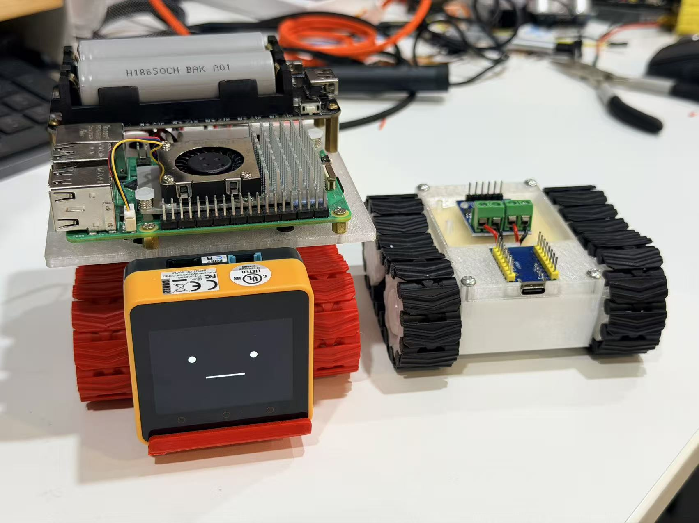

M5Stack Chan Home Companion Robot
An API LLM-powered home companion robot that can talk, show expressions, move around, and gradually become a helpful presence in daily life.
This project started from a simple question: what if an AI assistant was not only a chat window, but a small physical character at home?
The robot uses M5Stack Chan / STACK-CHAN as the expressive front-end. It can communicate through facial expressions, voice, and conversational responses powered by an API-based LLM. Under the body, a Raspberry Pi 5 and ESP32-controlled tank platform give it the ability to move by itself, turning the assistant from a static device into a small mobile companion.
View the GitHub Repository{ .md-button .md-button--primary }

The Story
Most AI assistants today live inside phones, speakers, or browser tabs. They answer questions, but they do not really feel present. I wanted to explore a different form: a small companion robot that can look back at you, react with a face, answer with a voice, and move around the room when needed.
M5Stack Chan is perfect for this role because it already feels like a character. By connecting it to an LLM, the robot can become a friendly interface for everyday interaction: chatting, reminding, explaining, recording, observing, and responding in a more natural way than a plain screen.
The tank base adds physical agency. It is not only a talking head on a desk; it can move, turn, approach, patrol, or reposition itself. That makes the project a prototype for a new kind of home AI device: expressive, mobile, and extensible.
Core Idea
| Capability | What It Means | | --- | --- | --- | | LLM Conversation | Connect to API-based large language models for natural dialogue, Q&A, reasoning, and task assistance | | Expressive Interface | Use M5Stack Chan's screen and character face to show emotion, status, attention, and feedback | | Voice Interaction | Support speaking and listening workflows so the robot can communicate without a keyboard | | Self Movement | Use the ESP32 tank base to control movement, turning the assistant into a mobile companion | | Expandable AI Brain | Use Raspberry Pi 5 as the local orchestration layer for memory, sensors, vision, automation, and local model experiments |
Possible Real-Life Uses
This project is designed as a flexible platform. Different software modules can turn the same robot into different kinds of home or office assistant.
| Scenario | Example Use |
|---|---|
| Elderly companionship | Daily conversation, medicine reminders, emotional check-ins, simple safety prompts, and routine monitoring |
| Child companionship | Storytelling, answering questions, language practice, and gentle learning support |
| Homework tutoring | Explain questions step by step, encourage progress, remind children to stay focused, and connect with a homework tracking system |
| Pet care | Patrol the room, play voice reminders, check feeding routines, or act as a mobile camera platform in future versions |
| Daily chat assistant | Casual conversation, schedule reminders, weather, simple planning, and household Q&A |
| Personal logbook | Record daily reflections, family notes, voice diaries, project progress, and searchable life logs |
| Company local assistant | Become a private office knowledge assistant for internal documents, meeting notes, procedures, and onboarding |
Privacy-Aware Local AI Direction
The first version can use cloud API LLMs for fast prototyping. But the more interesting long-term direction is a locally deployed home or company AI system.
In this model, the robot becomes the friendly physical interface for a local large model or local knowledge base. Sensitive information can stay inside the home or office network instead of being uploaded to cloud services. This makes the project useful for:
- Family records and private conversations
- Children's learning history
- Elderly care notes
- Company documents and internal knowledge
- Personal journals and long-term memory
- Local RAG systems for private Q&A
The robot is then not just a device. It becomes a small, embodied doorway into a private AI system.
System Architecture
| Layer | Main Role | What It Handles |
|---|---|---|
| M5Stack Chan Interaction Layer | Character interface | Facial expression, voice output, user-facing status, emotional feedback |
| LLM / Agent Layer | Intelligence | Conversation, reasoning, memory, tutoring, logging, planning, and tool use |
| Raspberry Pi 5 Master Layer | Local coordinator | API calls, local services, sensors, storage, future local models and RAG |
| ESP32 Tank Layer | Motion controller | Motor driver control, movement commands, real-time chassis control |
This layered design separates personality, intelligence, local computing, and physical movement. Each part can be improved independently.
Hardware Platform
The current hardware scope includes:
- Raspberry Pi 5 as the master controller
- ESP32-C3 Mini as the tank-side controller
- Custom tank chassis with dual DC motors
- L9110 motor driver
- 18650 battery and battery holder
- STACK-CHAN-compatible interaction hardware
- M3 heat-set threaded inserts and long M3 bolts for mechanical assembly
- M2.5 brass standoffs and Dupont wiring for module mounting
Optional expansion points include camera, microphone, speaker, ultrasonic sensor, IMU, servos, voice modules, and additional sensors.
Mechanical and CAD Design
| CAD File | Purpose | Quantity |
|---|---|---|
Tank_body_48mm_V4.2.step |
Main tank body for two TT motors | 1 |
tank_body_cover_V4.3.step |
First-layer top cover for ESP32-C3 and L9110 | 1 |
tank_body_cover_RPi.step |
Second-layer top cover for Raspberry Pi 5 and battery module | 1 |
tank_body_cover_RPi_V1.1.step |
Alternative second-layer cover with different wiring height | 1 |
sprocket_tank track 4_10teeth_V2.1.step |
Driving sprocket | 2 |
sprocket_tank track 4_10teeth_V2.2.step |
Passive sprocket | 2 |
Sprocket and track V4.1.step |
Tank track | 2 |
ESP32_soldering_holder_v1.1.step |
Soldering helper tool for ESP32 preparation | 1 |
Prototype Gallery


Current Status
The project is currently in the documentation and hardware architecture stage. The mechanical design and module layout are defined. The next major step is connecting the movement layer, M5Stack Chan interaction layer, and LLM conversation layer into one working prototype.
Roadmap
- Build the Raspberry Pi 5 to ESP32 movement command pipeline
- Add M5Stack Chan expression and voice interaction flows
- Connect API LLM conversation to robot state and actions
- Add memory and personal logbook features
- Integrate camera and sensors for simple awareness
- Explore homework tutoring and family assistant workflows
- Build a local RAG or local LLM version for private home/company deployment
Long-Term Vision
For me, this project is not only a robot tank. It is an experiment in giving AI a small body, a face, a voice, and a role in daily life.
The long-term vision is a home companion that can grow with different needs: chatting with elderly family members, helping children with homework, watching over pets, recording personal memories, or serving as a private interface to a local AI knowledge base. It is a small step toward AI that feels less like software and more like a helpful presence.